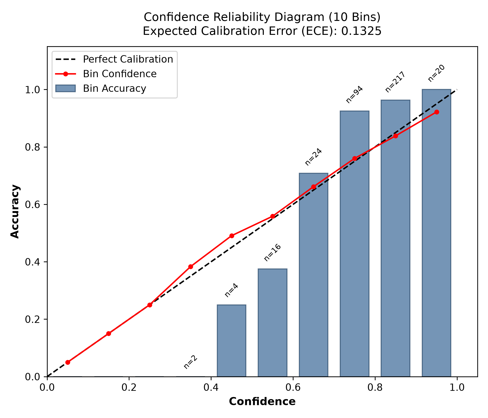
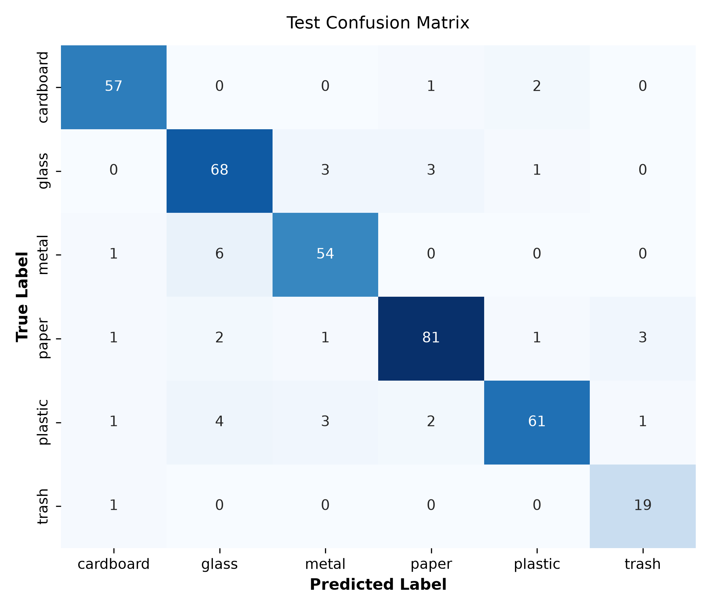

Abstract—Automated sorting of recyclable solid municipal waste requires robust, interpretable, and computationally lightweight classification models capable of identifying common material categories from visual imagery. In Phase 1 of the Smart Waste Segregation project, we investigate a strictly classical machine learning pipeline operating on the 6-class TrashNet dataset without transfer learning or deep neural networks. We conduct rigorous data auditing and near-duplicate grouping to eliminate data leakage before partitioning the dataset into group-aware stratified splits (1,764 training, 380 validation, 377 test images). We design and extract standardized handcrafted descriptors combining color histograms (HSV, RGB, LAB), gradient orientation profiles (Histogram of Oriented Gradients, HOG), and multi-scale texture features (Local Binary Patterns, LBP), totaling up to 2,760 dimensions across multiple image regions. Within a strictly isolated 5-fold group-aware cross-validation protocol, we evaluate Support Vector Machines (SVM) and Random Forests. An extended RBF SVM (C=10, gamma=10 with elementwise square root and L2 normalization) achieves a winning training cross-validation macro F1 score of 0.8803 ± 0.0271, outperforming refined Random Forest models (0.8370 ± 0.0241). The winning pipeline is calibrated using out-of-fold Platt scaling, and an abstention threshold (tau = 0.52) is selected exclusively on the validation split. On the untouched test set (377 images), the model delivers an unconditional macro F1 of 0.8999 and an accuracy of 90.19%. Selective classification under abstention rejects 6 ambiguous images (5 of which were misclassifications), yielding an accepted test accuracy of 91.37% and an accepted macro F1 of 0.9129 at 98.41% coverage. We package the validated model into a local Gradio photo upload demonstration that surfaces calibrated probabilities and uncertainty advisories while preserving local privacy.
Effective municipal waste segregation is critical to sustainable materials recovery, circular economy adoption, and environmental conservation. Automated sorting facilities increasingly rely on computer vision systems to distinguish recyclable packaging materials at source and processing conveyor nodes. However, deploying computer vision models in resource-constrained municipal sorting environments demands rigorous guarantees regarding data leakage, training isolation, computational footprint, and prediction reliability.
In accordance with Phase 1 project requirements, this study investigates classical machine learning techniques—specifically Support Vector Machines (SVM) and Random Forests—leveraging handcrafted visual representations. While contemporary research frequently adopts deep convolutional networks, classical methods offer deterministic feature provenance, lower training energy demands, transparency, and minimal hardware requirements for embedded sorting devices.
The benchmark dataset comprises 2,527 digital images across six recyclable waste categories: cardboard, glass, metal, paper, plastic, and trash. Initial auditing confirmed all source images were 3-channel RGB digital photographs at 512×384 pixels. Exact MD5 hashing identified conflicting class labels across identical image files, resulting in the quarantine of 6 image files across 3 conflicting-content groups.
For the remaining 2,521 usable images, candidate duplicate pairs were generated using perceptual hashing with an inclusive Hamming distance threshold of ≤ 6. A total of 45 candidate pairs were subjected to multi-reviewer visual inspection. Six ambiguous pairs exhibited identical brand packaging but indeterminate deformation; following conservative methodology, these pairs were assigned to unified duplicate groups to ensure they would never be split across train, validation, or test sets.
The 2,521 audited images were partitioned into outer splits using a group-aware stratified allocation targeting a nominal 70/15/15 ratio. As summarized in Table I, duplicate groups were preserved atomically within their assigned splits. The final verified split contains 1,764 training images (69.97%), 380 validation images (15.07%), and 377 test images (14.95%).
| Category | Train | Val | Test | Total |
|---|---|---|---|---|
| Cardboard | 282 | 61 | 60 | 403 |
| Glass | 351 | 75 | 75 | 501 |
| Metal | 288 | 61 | 61 | 410 |
| Paper | 416 | 89 | 89 | 594 |
| Plastic | 338 | 72 | 72 | 482 |
| Trash | 89 | 22 | 20 | 131 |
| Total | 1,764 | 380 | 377 | 2,521 |
The preprocessing module implements EXIF orientation normalization, alpha channel compositing onto white background ([255, 255, 255]), and aspect-preserving letterboxing via Lanczos interpolation. This prevents structural distortion of object silhouettes before gradient feature calculation.
The baseline feature representation combines three complementary visual modalities:
Features are extracted across six regions (global, foreground, 4 quadrants) on a 256×256 canvas: multi-color space (HSV, RGB, LAB, joint HS; 288 dims/region) and multi-scale LBP (R∈{1,2,3}, P∈{8,16,24}; 172 dims/region), totaling 2,760 raw features. The winning pipeline selects 1,608 dimensions corresponding to global color and spatial texture.
All model training and feature ablations were conducted strictly on the 1,764 training samples using 5-fold StratifiedGroupKFold (seed 42). Feature scaling (StandardScaler) was fitted exclusively on the 4/5 training complement of each fold.
| Model Family | Descriptors | Dims | CV Macro F1 |
|---|---|---|---|
| Dummy (Most Freq.) | All | 1,806 | 0.0636 ± 0.0002 |
| Linear SVM | All | 1,806 | 0.6007 ± 0.0284 |
| RBF SVM | All | 1,806 | 0.6731 ± 0.0339 |
| Random Forest | Color (HSV) | 32 | 0.7366 ± 0.0260 |
| Random Forest | HOG Only | 1,764 | 0.6252 ± 0.0350 |
| Random Forest | LBP Only | 10 | 0.5069 ± 0.0108 |
| Random Forest | All | 1,806 | 0.7090 ± 0.0522 |
| RF Refinement | Ext. Spatial | 2,760 | 0.8370 ± 0.0241 |
| Extended RBF SVM | Ext. Global/Spat | 1,608 | 0.8803 ± 0.0271 |
Feature Subspace Dilution in Random Forest: Sampling m = √p candidate features caused 32 color features to represent only 1.8% of candidates in the 1,806 space, degrading score from 0.7366 to 0.7090. Tuning max_features=0.25 on extended features restored RF performance to 0.8370.
Nonlinear Separation in RBF SVM: Applying elementwise square-root and L2 normalization (root_l2) with C=10, γ=10 achieved the global maximum CV macro F1 of 0.8803 ± 0.0271, which was chosen for final evaluation.
Prajjwal Tripathi implemented Platt sigmoid calibration via CalibratedClassifierCV(ensemble=True) across the 5 training folds. Abstention threshold selection on the 380 validation images selected τ = 0.52 (98.16% coverage, 90.08% accepted accuracy).

On the 377 untouched test images:

Of 6 abstained test images, 5 were misclassifications (cardboard100, glass301, paper538, plastic116, plastic464), and only 1 was correct (paper348). Abstention safely prevented 5 user-facing errors.
Saksham Mighlani built the local Gradio interface (app.py) reusing the validated model in-memory without reloading the 66 MB binary. Predictions strictly call the shared predict_image contract. An amber uncertainty banner alerts users when P_max < 0.52, and the system explicitly notes that confidence-based abstention cannot reliably detect unknown out-of-distribution classes. Uploaded photos are processed in memory and are never stored in project directories, though the underlying Gradio framework creates transient transport files in system temporary storage.
The original calibration run was executed on an uncommitted tree before commit b775f02. According to the original author's account, subsequent non-functional docstring and comment line-wrapping edits altered the package hash from 26e7e076... to cab3b677.... Because no intermediate git tree snapshot was preserved, the exact historical package state could not be independently reconstructed from Git history; this explanation is recorded as the author's account rather than an independently proven fact. The evaluated model and final predictions were preserved without refitting to maintain evaluation integrity.